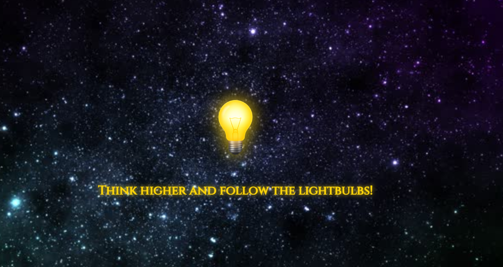
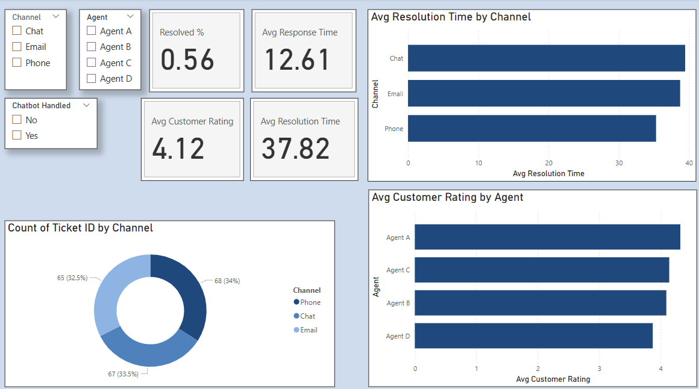
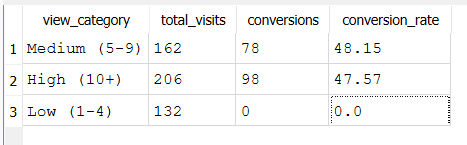

Projects
Exploring creativity through data, design, and automation.

Customer Experience KPI Dashboard
Built a Power BI dashboard to track support metrics — resolution time, percent resolved, and customer ratings. Includes DAX measures and interactive visuals to surface opportunities for faster chat resolutions.

SQL Website Customer Insights
Created an SQLite dataset of synthetic website visitor data and wrote advanced SQL queries to surface conversion rates, session metrics by device, and campaign performance.